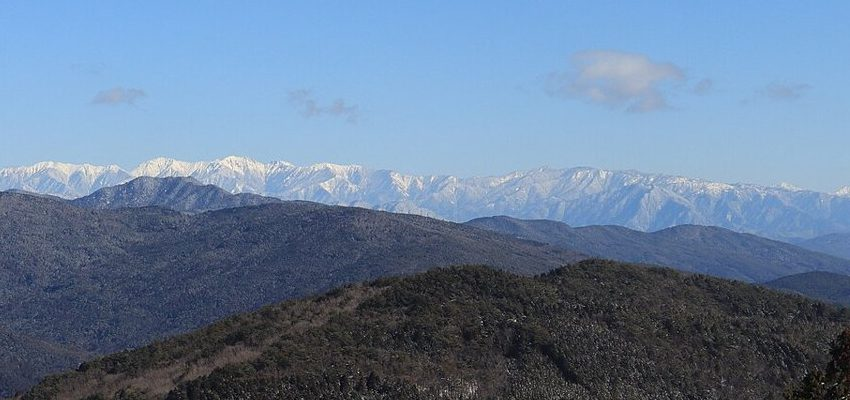

SAMPLE 営業用サンプルこのページは制作見本です。実在する店舗の公式サイトではありません。
〒399-5607 長野県木曽郡上松町小川2352
アクセス
地図は住所をもとに表示しています。表示位置は目安です。
- 駐車場
- 準備中(お問い合わせください)
- 公共交通機関
- 最寄駅・バスなど:準備中(お問い合わせください)
- 営業時間
- 準備中(お問い合わせください)
- 定休日
- 準備中(お問い合わせください)
お越しの際は、事前にお電話でご確認いただくと安心です。

実際の周辺の景色ではなく、山のイメージ写真です。
掲載写真はフリー素材のイメージ写真です。店舗の実際の商品・店内・周辺ではありません。他地域で撮影されたものや撮影地が不明なものを含みます。